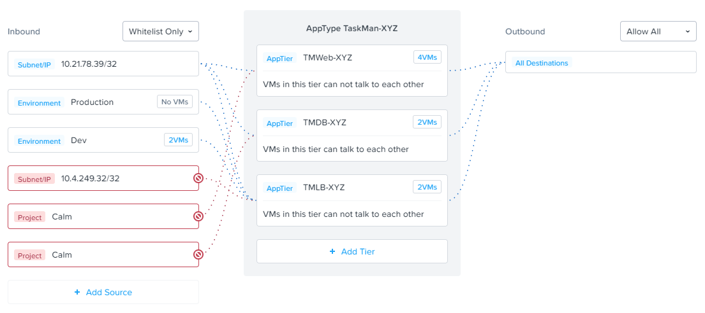
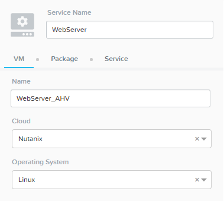

Flow: Assign Categories inside Calm Blueprint (Optional)¶
The estimated time to complete this lab is 10 minutes.
Using Flow with Calm¶
At the beginning of this lab, Calm was used to provide a multi-tier application as a basis for understanding how Flow policies can be created, applied, and monitored using existing workloads in an environment.
Flow also integrates natively with Calm to define Categories at the Service (VM) level within the Calm blueprint.
Note
Flow policies for Calm provisioned VMs should ensure that port 22 (for Linux VMs) and port 5985 (for Windows VMs) are open. This was done earlier in the lab when initially creating the AppTaskMan policy.
First update the Initials-AppTaskMan security policy from Whitelist Only to Allow All for Outbound connections, as shown below.
Can you explain WHY the blueprint would require additional outbound access to deploy?
In a production environment, VMs from Calm could leverage either a staging category during provisioning or additional Outbound rules to specify only the hosts with which it needed to communicate to complete provisioning.
In Prism Central, select > Services > Calm.
Click
 Blueprints > Initials-TaskManager to open your existing blueprint.
Blueprints > Initials-TaskManager to open your existing blueprint.Select the WebServer service.
On the VM tab, scroll to Categories and select the AppType:Initials-TaskMan and AppTier:Initials-TMWeb categories.

Using the same method, apply the appropriate categories to the remaining services.
Save and Launch the updated blueprint.
Once application provisioning has completed, note the additional VMs detected as part of the policy.
Does the application behave as expected? From the new client VM, are you able to ping the load balancer but not the database? Are you able to access the application?
Integrating Flow with Calm allows automated deployment of applications that are secured as they are created. When an application is deployed from a blueprint the proper categories can be assigned as the VMs are created. As soon as a VM is powered on for the first time it will automatically be part of the right category and security policy without any manual intervention.
The application of categories can be performed programmatically via the v3 REST API in Prism Central. Categories are a metadata property of the v3/vms API .
Takeaways¶
- Calm Blueprints can deploy applications that are automatically secured with Flow.